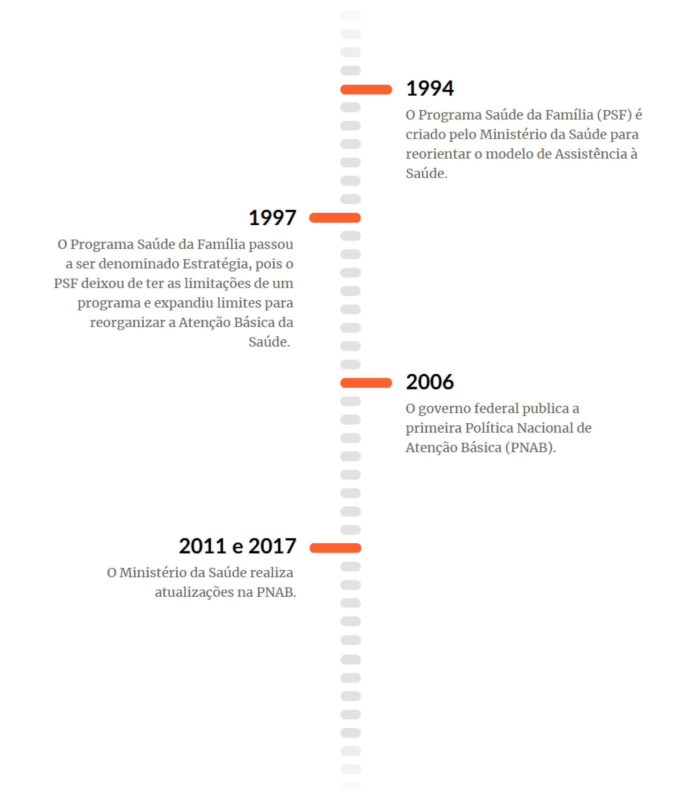
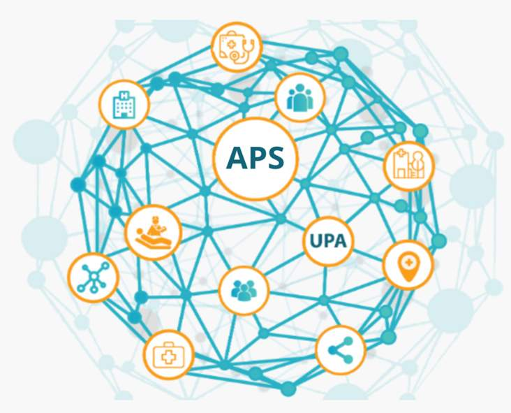
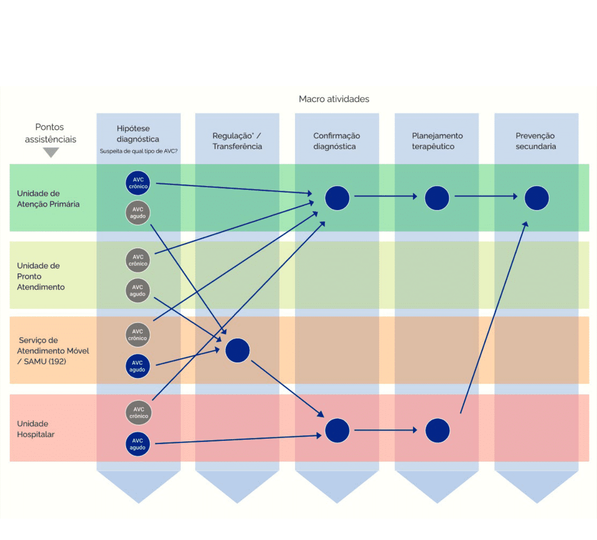
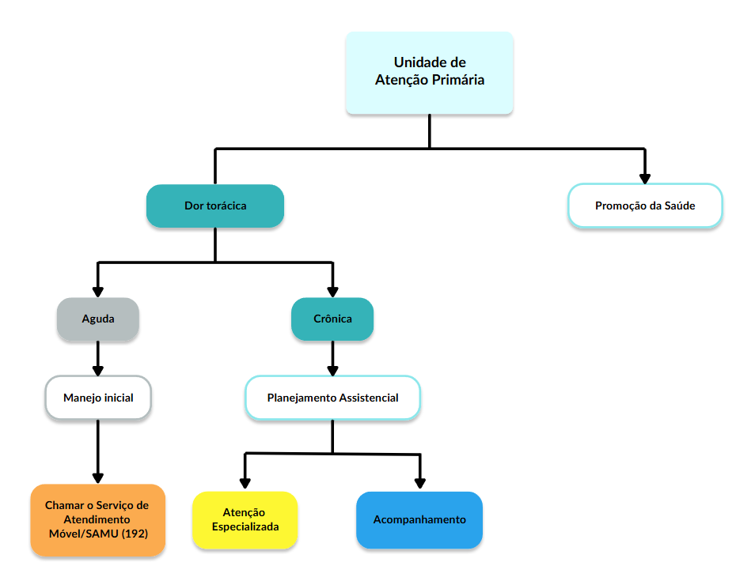
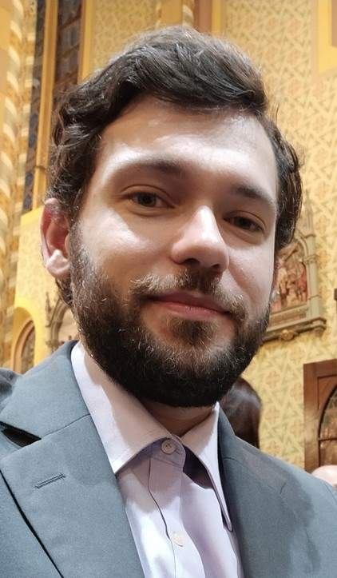
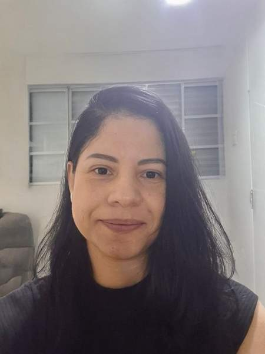

Apresentação da Unidade
Olá, estudante-trabalhador! Seja bem-vindo!
Nesta Unidade, serão apresentadas a composição e a atuação das equipes de Atenção Primária Prisional (eAPP), conforme os princípios e diretrizes da Atenção Primária à Saúde (APS). Serão abordadas as estratégias de promoção da saúde e prevenção de agravos agudos e/ou crônicos, com base em fluxos e protocolos de cuidado, considerando todo o itinerário da pessoa privada de liberdade (PPL) no contexto prisional.
Objetivos de Aprendizagem da Unidade
Descrever as estruturas e a organização das equipes de Saúde da Família e das equipes de Atenção Primária Prisional;
Reconhecer o papel das equipes de Atenção Primária Prisional na coordenação do cuidado às pessoas privadas de liberdade no âmbito das Redes de Atenção à Saúde;
Identificar a importância da adesão aos protocolos utilizados na Atenção Primária à Saúde e do acolhimento com classificação de risco pelas equipes de Atenção Primária Prisional para qualificar o cuidado às pessoas privadas de liberdade;
Compreender o itinerário do cuidado e as possibilidades de encaminhamento das pessoas privadas de liberdade para os diferentes pontos de atenção à saúde e de retaguarda laboratorial.
Carga Horária de Estudo: 10 horas
2.1 Estrutura e organização das equipes de Saúde da Família
Após abordarmos o papel das eAPP como ponto central da Rede de Atenção à Saúde (RAS), destacando que sua atuação deve estar em concordância com os princípios da APS para garantir às PPL o cuidado e o acesso ao sistema de saúde, vamos apresentar como essas equipes devem ser estruturadas e como se organiza seu processo de trabalho nos estabelecimentos penais.
A APS sempre foi protagonista na trajetória de construção do SUS. Nesse caminho, por meio da Política Nacional de Atenção Básica (PNAB), estabeleceu-se a Estratégia Saúde da Família (ESF) como porta de entrada prioritária para o sistema de saúde e como uma estratégia para a reorganização da APS.
Mas do que se trata a ESF e como ela pode nortear, no âmbito prisional, o processo de trabalho das eAPP?
Para iniciarmos nossa resposta, vamos observar a Figura 1, que apresenta a trajetória da ESF na construção do SUS.
Figura 1 - Linha do tempo da Estratégia Saúde da Família, antigo Programa Saúde da Família

Fonte: Brasil (2023).Em 1994, o Ministério da Saúde criou o Programa Saúde da Família com o objetivo de reorganizar o modelo de atenção à saúde na APS, alinhando-o aos princípios e diretrizes do SUS. Essa iniciativa permitiu o desenvolvimento de uma nova forma de atuação dos pontos de APS, bem como a reorganização dos processos de trabalho na saúde.
Destaca-se que, embora o Programa Saúde da Família tenha sido inicialmente implementado como um programa, a partir de 1997, o Ministério da Saúde passou a denominá-lo de ESF. Essa mudança refletiu o reconhecimento da capacidade da ESF de reorganizar as ações de saúde para enfrentar os problemas identificados em um determinado território.
A ESF tem como foco a família e a comunidade, adotando uma abordagem integral do indivíduo, em vez de uma abordagem fragmentada e centralizada na doença. Essa estratégia considera todas as dimensões da pessoa — biológica, psicológica e social —, valorizando seu contexto de vida e suas experiências.
Você sabe quais profissionais de saúde compõem as equipes de Saúde da Família (eSF)?
Na Figura 2, vemos os diferentes profissionais de saúde que atuam na ESF. Observe que há uma equipe base e profissionais adicionais que podem e devem ser incluídos na equipe para garantia do acesso.
É importante destacar que a eSF é composta por profissionais de diferentes categorias, como médicos, enfermeiros e cirurgiões-dentistas, e o cuidado deve ser prestado de forma articulada entre eles. Essa equipe assume a responsabilidade sanitária pelo território e pelos indivíduos daquela população em todas as fases da vida, devendo prestar um cuidado contínuo voltado para a promoção da saúde, prevenção de agravos, tratamento, reabilitação, redução de danos e cuidados paliativos.
Dessa forma, a eSF deve atuar na perspectiva da vigilância em saúde, conhecendo o território e a população adscrita e intervindo, quando necessário, nos domicílios, nas condições de moradia e trabalho, nos territórios e nas relações familiares, sociais e culturais que se estabelecem nesses espaços. Esses fatores influenciam diretamente os modos de vida e os processos de adoecimento da população (Mendes, 2011).
Ressalta-se que, embora a PNAB tenha passado por diversas atualizações ao longo da história do SUS, a ESF permanece como a estratégia prioritária para a organização e expansão da APS no país, inclusive no âmbito das instituições penais.
2.1.1 As equipes de Atenção Primária Prisional, enquanto equipes de Atenção Primária à Saúde
Você sabia que, desde 2017, a PNAB reconhece o direito à saúde da população privada de liberdade?
Em sua última atualização, publicada em 2017, a PNAB, em articulação com a PNAISP, passou a reconhecer as pessoas privadas de liberdade como população em situação de vulnerabilidade social e com necessidades de saúde específicas, muitas vezes determinadas pelas condições inerentes ao sistema prisional brasileiro (Brasil, 2017).
Você sabia também que as equipes de saúde do sistema prisional são denominadas equipes de Atenção Primária Prisional (eAPP)?
Pois é! As eAPP têm as mesmas atribuições que os profissionais que atuam na APS fora do sistema prisional, considerando, no entanto, as especificidades do território prisional e as singularidades das PPL sob sua responsabilidade. A eAPP é uma equipe multiprofissional, que deve atuar com o objetivo de garantir a entrada e o acesso das PPL às RAS. Tal equipe tem a função de prestar assistência integral às PPL, além de coordenar o cuidado de forma a facilitar o processo de referência e contrarreferência das PPL entre os serviços de saúde.
Considerando as especificidades e os diferentes contextos das instituições penais brasileiras, a conformação das eAPP pode variar, da mesma forma que acontece com as equipes de APS que atuam fora do sistema prisional.
O Ministério da Saúde leva em consideração o número de pessoas custodiadas e a necessidade de a equipe ter um profissional com experiência em saúde mental para definir as equipes de cada instituição penal. Sendo assim, elas podem ser classificadas em: eAPP Tipo I; eAPP Tipo I com saúde mental; eAPP Tipo II; eAPP Tipo II com saúde mental; eAPP Tipo III.
A jornada de trabalho semanal a ser cumprida por cada categoria profissional varia de acordo com o tipo de eAPP em que o profissional está inserido, conforme Quadro 1.
Quadro 1 - Composição das equipes de Atenção Primária Prisional
Clique para interagir
- Cirurgião-dentista
- Enfermeiro
- Médico
- Técnico/auxiliar de enfermagem
- Técnico/auxiliar de higiene bucal
Cada profissional cumprirá 6 horas semanais.
- Cirurgião-dentista
- Enfermeiro
- Médico
- Técnico/auxiliar de enfermagem
- Técnico/auxiliar de higiene bucal
- Psiquiatra ou médico com experiência em saúde mental
02 profissionais selecionados entre as seguintes ocupações: assistente social; enfermagem; farmácia; fisioterapia; psicologia; ou terapia ocupacional
Cada profissional cumprirá 6 horas semanais.
- Cirurgião-dentista
- Enfermeiro
- Médico
- Técnico/auxiliar de enfermagem
- Técnico/auxiliar de higiene bucal
- Assistente Social
Profissionais selecionados entre as seguintes ocupações: assistente social; enfermagem; farmácia; fisioterapia; nutrição; psicologia; ou terapia ocupacional
Cada categoria profissional cumprirá carga horária mínima de 20 horas semanais.
- Cirurgião-dentista
- Enfermeiro
- Médico
- Técnico/auxiliar de enfermagem
- Técnico/auxiliar de higiene bucal
- Assistente Social
- Psiquiatra ou médico com experiência em saúde mental
02 profissionais selecionados entre as seguintes ocupações: assistente social; enfermagem; farmácia; fisioterapia; psicologia; ou terapia ocupacional
Cada categoria profissional cumprirá carga horária mínima de 20 horas semanais.
- Cirurgião-dentista
- Enfermeiro
- Médico
- Técnico/auxiliar de enfermagem
- Técnico/auxiliar de higiene bucal
- Assistente Social
- Psiquiatra ou médico com experiência em saúde mental
02 profissionais selecionados entre as seguintes ocupações: assistente social; enfermagem; farmácia; fisioterapia; psicologia; ou terapia ocupacional
Cada categoria profissional cumprirá carga horária mínima de 30 horas semanais.
Conforme observado no Quadro 1, as eAPP não contam com Agente Comunitário de Saúde nem com Agente de Combate às Endemias. No entanto, estratégias de educação entre pares, desenvolvidas por e para as PPL em parceria com os profissionais de saúde, podem contribuir significativamente para a melhoria dos resultados em saúde nesse contexto. Dessa forma, as PPL podem atuar nos programas de educação e promoção da saúde realizados na APS Prisional.
2.2 O papel das equipes de Atenção Primária Prisional no cuidado às pessoas privadas de liberdade nas Redes de Atenção à Saúde
Como já vimos anteriormente, as eAPP devem garantir o acesso ao cuidado no SUS, cumprindo seus princípios doutrinários e organizativos, ou seja, seus valores fundamentais que determinam sua função e sua forma de organização, dentre os quais destacamos a universalidade, integralidade, a intersetorialidade, a descentralização, a hierarquização e a humanização (Brasil, 2014).
Você já ouviu falar desses princípios e diretrizes do SUS? Vamos aprender juntos.
Clique para interagir
As eAPP devem estar orientadas e capacitadas para prestar um cuidado integral à saúde para todas as PPL. Dessa forma, devem ofertar ações de promoção da saúde, prevenção de doenças e de recuperação, assim como o encaminhamento dos casos de maior complexidade para a atenção especializada na RAS.
As eAPP devem compreender que as ações de saúde têm uma dimensão ampliada no sistema prisional, envolvendo articulações com setores como educação, assistência social, entre outros, visando à garantia dos direitos das PPL.
A gestão dos serviços da APS, assim como a definição e a organização dos fluxos para acesso aos serviços de média e alta complexidade são responsabilidades do gestor municipal em que o estabelecimento penal está instalada. Sendo assim, é essencial que a eAPP conheça e esteja alinhada com os fluxos estabelecidos no município para, assim, quando necessário, garantir o acesso da PPL aos demais serviços de saúde da RAS.
As práticas em saúde da eAPP devem nortear-se pelo princípio da humanização, por isso devem ser respeitosas, ou seja, os profissionais das equipes e os gestores devem ter atitudes e comportamentos que demostrem respeito a todas as diferenças, sem discriminação de qualquer espécie e sem imposição de valores e crenças pessoais.
Reflexão
Imagine que uma mulher privada de liberdade tenha começado a apresentar febre, dor de cabeça, dor no corpo, sangramento gengival e dor abdominal intensa há dois dias. A eAPP inicialmente a acolheu e, após suspeita de dengue, solicitou exames de sangue e NS1 (teste para dengue), cujos resultados foram baixo número de plaquetas e positivo para dengue. Foi realizada hidratação no sistema prisional, mas, como ela apresentava sinais de alarme e mal estado geral, foi encaminhada para uma Unidade de Pronto Atendimento (UPA). Chegando lá, precisou ficar internada até a estabilização do quadro geral e a hidratação estar adequada. Após o encaminhamento do caso, a eAPP realizou uma atividade de educação em saúde na instituição penal para identificar criadouros do mosquito da dengue.
Nesse caso, quais princípios e diretrizes podem ser identificados? O que poderia ter sido feito para que outro ou outros princípios fossem também contemplados?
A nosso ver, parece que os princípios da integralidade, descentralização e humanização foram atendidos. Não sabemos se integralmente, pois seriam necessários mais elementos para confirmar. Quanto à intersetorialidade, as eAPP poderiam ter feito articulação com as equipes de segurança e de educação das instituições penais para fortalecer a realização de ações de educação em saúde e de identificação dos criadouros.
2.2.1 O papel das equipes de Atenção Primária Prisional na coordenação do cuidado às pessoas privadas de liberdade
Agora que compreendemos os princípios e as diretrizes que devem nortear o trabalho das eAPP, é fundamental entender o papel que essas equipes desempenham nas RAS.
A atuação das eAPP deve assegurar práticas assistenciais qualificadas e promover a continuidade do cuidado em todos os pontos da rede. Para isso, as eAPP são responsáveis pela coordenação do cuidado nas RAS, devendo acompanhar e organizar o fluxo dos usuários entre os serviços de saúde. Elas devem atuar como centro de comunicação entre os pontos de atenção, os serviços de apoio diagnóstico e logístico e os diversos profissionais envolvidos, possibilitando uma gestão compartilhada e uma atenção integral e centrada nas necessidades dos usuários. A eAPP, portanto, deve se organizar para fazer a gestão de todo o cuidado do usuário. Isso inclui, por exemplo, acompanhar o processo de encaminhamento para outros serviços/profissionais, assegurando que o atendimento ocorra efetivamente, e, após o retorno, buscar compreender os desdobramentos da atenção recebida.
Dessa forma, a coordenação é essencial para garantir a continuidade e a integralidade do cuidado, sendo facilitada por ferramentas como os sistemas de informação em saúde, prontuários eletrônicos e guias de referência e contrarreferência. Além disso, há necessidade de avaliação permanente da situação de saúde das PPL e, para tal, o vínculo com elas é fundamental.
Também é fundamental que a coordenação da assistência compreenda os conceitos de integração vertical e horizontal. A integração vertical refere-se à articulação entre os diferentes pontos de atenção à saúde da rede assistencial, enquanto a integração horizontal diz respeito à articulação entre os profissionais que compõem uma mesma equipe (Kringos et al., 2010). Nesse sentido, promover uma atenção compartilhada e resolutiva exige o aperfeiçoamento do fluxo de informações dentro e entre todos os pontos de atenção.
Esse papel desempenhado pelas eAPP está alinhado a uma das funções essenciais da APS: ser o centro de comunicação das RAS, conforme ilustrado na Figura 3.
Figura 3 - Representação da APS como centro coordenadora das RAS

Fonte: Almeida (2019)Vejamos um relato de caso fictício!
JMS, 55 anos, homem, está privado de liberdade há 10 anos. Em sua história clínica pregressa, apresenta diagnóstico de diabetes mellitus, já conhecido e acompanhado pela eAPP, com monitoramento regular da glicemia capilar e exames laboratoriais.
Dessa forma, você entende que a eAPP realizou seu papel de coordenar o cuidado?
2.3 A atuação das equipes de Atenção Primária Prisional segundo diretrizes clínicas
Vimos na seção anterior que as eAPP devem coordenar todo o cuidado prestado às PPL nas RAS. Nesta seção, vamos explorar outro papel fundamental das eAPP: a atuação com base em diretrizes clínicas.
Mas o que são diretrizes clínicas e como utilizá-las na prática?
2.3.1 Definição das diretrizes clínicas
A APS, incluindo as Unidades Básicas de Saúde Prisional (UBSP), deve utilizar em sua rotina diretrizes clínicas para subsidiar as decisões assistenciais. Isso contribui para que as eAPP, por exemplo, tenham condições de encaminhar cada PPL para o ponto de atenção mais adequado, de acordo com a condição de saúde apresentada durante as consultas.
Essas diretrizes são construídas com base em resultados de pesquisas científicas para que a APS possa responder melhor às necessidades de saúde da população, principalmente quando são necessários cuidados específicos.
Elas definem as ações e os serviços a serem ofertados pelas UBS para o atendimento de determinados problemas de saúde, segundo a disponibilidade de materiais e equipamentos de cada uma delas.
2.3.2 Funções das diretrizes clínicas
As diretrizes clínicas cumprem quatro funções essenciais nos sistemas de atenção à saúde: gerencial, educacional, comunicacional e legal. Vamos entender cada uma delas.
Clique para interagir
Surge da necessidade de organizar melhor os serviços de saúde para diminuir as diferenças entre eles e facilitar a gestão do cuidado por meio da padronização dos processos.
As diretrizes clínicas podem ser usadas como ferramentas para promover a educação permanente dos profissionais de saúde e para orientar as pessoas que utilizam os serviços de saúde. Essas diretrizes ajudam os profissionais a saberem como agir no cuidado com as pessoas usuárias e possibilitam que as pessoas que utilizam os serviços de saúde conheçam e possam seguir medidas que melhorarem os cuidados com a própria saúde.
As diretrizes clínicas também servem como uma forma de comunicação entre o sistema de saúde, os profissionais e a população. Essa função comunicacional busca garantir que todos os envolvidos nos cuidados à saúde dentro dos serviços trabalhem com os mesmos objetivos e de forma coordenada. Quando os procedimentos são organizados e compartilhados com todos, é possível melhorar a comunicação entre as equipes e entre os diferentes níveis da gestão, o que facilita o planejamento das ações. Já em lugares em que não há diretrizes bem definidas, cada profissional pode ter sua própria forma de agir, o que dificulta a organização e a comunicação do trabalho em equipe.
O cumprimento das normas estabelecidas nas diretrizes e nos protocolos clínicos ajuda a proteger legalmente os profissionais e os serviços de saúde, caso ocorram problemas durante o atendimento.
2.3.3 Tipos de diretrizes clínicas
No SUS, encontramos dois tipos de diretrizes clínicas: as linhas-guia (guidelines ou linhas de cuidado) e os protocolos clínicos. As linhas-guia normatizam todo o processo de atenção a uma determinada condição de saúde. Elas podem recomendar ações de proteção à saúde, preventivas, curativas, reabilitadoras e paliativas, determinando quais dessas ações serão realizadas em cada ponto de atenção da RAS (atenção primária, secundária e terciária à saúde) e nos sistemas de apoio. Um exemplo de linha-guia recomendada pelo Ministério da Saúde é a linha de cuidado do adulto com AVC, que pode ser vista na Figura 4.
Figura 4 - Processo completo da linha de cuidado do adulto com AVC

Fonte: Brasil (2020, p. 9).Azul: Chegada no Local Ideal
Cinza: Chegada com possibildiade de Atraso no planejamento terapêutico
Já os protocolos clínicos constituem recomendações detalhadas e desenvolvidas com o objetivo de prestar a atenção à saúde de forma apropriada. Assim, as ações a serem desenvolvidas são definidas com maior precisão e menor variabilidade e incluem detalhes de como deve ser feito o diagnóstico, o tratamento ou outra parte do processo assistencial das condições de saúde. Cabe ressaltar que o protocolo clínico define as atribuições de cada ponto de atenção no atendimento a determinada condição de saúde e, por isso, o direcionamento assistencial pode seguir diretrizes de uma linha-guia e de um protocolo clínico ao mesmo tempo.
Agora que compreendemos as linhas de cuidado e os protocolos clínicos, vamos observar como esses instrumentos podem ser aplicados na prática dos profissionais de saúde. Tomemos como exemplo a tuberculose. Ao identificar sintomas sugestivos de tuberculose pulmonar em uma PPL, como febre, tosse persistente e perda de peso, a eAPP deve seguir o Manual de Recomendações para o Controle da Tuberculose no Brasil, publicado pelo Ministério da Saúde em 2019, para solicitar exames necessários ao diagnóstico e definir o tratamento, com a responsabilidade de acompanhar o caso até a alta (Brasil, 2019).
Com base no Manual, a eAPP também identificou a importância de investigar os contatos próximos da PPL para rastrear possíveis novos casos. Essa investigação identificou uma PPL vivendo com HIV e diagnosticada com tuberculose infecção, condição em que a pessoa está infectada pelo bacilo causador da doença, mas ainda não desenvolveu sintomas. É importante destacar que a tuberculose infecção também requer tratamento. Ao consultar a Linha de Cuidado da Tuberculose, publicada em 2021, a eAPP verificou a necessidade de encaminhar essa PPL ao Serviço de Atenção Especializada ao HIV, o que foi prontamente realizado (Brasil, 2021b).
Além disso, a Linha de Cuidado inspirou a equipe a estabelecer parcerias com os professores do sistema prisional para promover ações de educação em saúde entre as PPL a fim de ampliar o alcance das medidas de prevenção. Dessa forma, o Manual de Recomendações e a Linha de Cuidado orientaram a eAPP sobre como direcionar e integrar diversas ações de cuidado, prevenção e promoção da saúde, assim como mostraram que muitas outras iniciativas poderiam ter sido implementadas.
2.3.4 A importância do acolhimento da demanda espontânea com avaliação/estratificação de risco e vulnerabilidade na Atenção Primária à Saúde
Na APS, é essencial que, além das ações programadas/agendadas, a eAPP garanta o acolhimento e o atendimento das demandas espontâneas que chegam todos os dias às UBSP para, assim, possibilitar o acesso com equidade à APS Prisional, especialmente no cotidiano das pessoas privadas de liberdade que dependem integralmente da eAPP para acesso aos demais pontos de atenção da RAS.
Ressaltamos que, na APS, diferentemente de outros pontos de atenção, o olhar para o risco não se limita apenas ao aspecto biológico, sendo essencial identificar outras condições que aumentam a vulnerabilidade das PPL. Dessa forma, o acolhimento da demanda espontânea é uma oportunidade para a construção de um plano de cuidado singular.
Devemos lembrar, ainda, que o atendimento da demanda espontânea na APS muitas vezes irá se diferenciar do realizado nas Unidades de Pronto Atendimento (UPA), uma vez que, na APS, nem sempre haverá necessidade, após acolhimento e escuta qualificada, da adoção de limites rígidos de tempo para atendimento. Sendo assim, é imprescindível que toda a equipe de saúde reconheça possíveis situações de risco ou que gerem intenso sofrimento para priorizar o atendimento imediato, prioritário ou no dia.
Cabe destacar que é responsabilidade do profissional da eAPP que realiza a primeira escuta organizar o acesso das PPL à UBSP, sendo importante esclarecer não apenas o processo de trabalho da equipe e como ocorre o fluxo de cuidado na demanda espontânea, mas também que haverá diferentes tempos de espera, considerando o processo de avaliação/estratificação de risco e vulnerabilidade.
Posto isso, deve fazer parte do processo de trabalho da eAPP no acolhimento da demanda espontânea com classificação de risco e vulnerabilidades:
- Avaliar a necessidade de intervenções imediatas devido a risco de morte;
- Prestar os primeiros cuidados e, quando necessário, encaminhar a PPL para outros pontos de atenção da RAS;
- Identificar as vulnerabilidades individuais e coletivas;
- Classificar/estratificar o risco para definir as prioridades de cuidado;
- Organizar as PPL na UBSP conforme intervenção necessária, acomodando os que necessitam de observação ou administração de medicamentos, os que aguardam remoção para outros pontos de atenção na RAS e os suspeitos de doenças infectocontagiosas como tuberculose, meningite, sarampo, coqueluche etc.;
- Definir o fluxo de atendimento das PPL na UBSP e encaminhá-las para o cuidado necessário, segundo a classificação de risco.
Ressaltamos que, embora os protocolos de estratificação de risco comumente utilizados nas UPA possam ser utilizados como referência na APS, uma vez que melhoram a qualidade do atendimento, serão necessárias a ressignificação e a adaptação desses protocolos, considerando a natureza da APS e seus princípios fundamentais de vinculação, longitudinalidade, responsabilização e gestão do cuidado, sendo fundamental o olhar combinado sobre os riscos e sobre as vulnerabilidades.
É importante lembrar que a APS tem alguns aspectos que a diferenciam dos outros pontos de atenção, como: acolhimento de condições geradoras de vulnerabilidades sociais ou subjetivas que, embora de baixo risco biológico, podem exigir um atendimento no mesmo dia ou agendamento de curto prazo; necessidade de ofertar mais de um tipo de cuidado; e a possibilidade de integrar a atenção individual à educação em saúde, monitoramento do território e intervenções coletivas.
Sendo assim, considerando os aspectos inerentes à APS apontados, o Ministério da Saúde (Brasil, 2013) orienta que na APS seja adotada uma classificação geral e sintética dos casos de demanda espontânea, de forma a correlacionar a avaliação/estratificação de risco e vulnerabilidades aos modos de intervenções/cuidados necessários.
Dessa forma, propõe-se que as intervenções, mediante avaliação de risco e vulnerabilidade da PPL, sejam classificadas em “Não agudas”, sendo assim possível programar o cuidado a ser ofertado, e “Agudas”, com necessidade de atendimento imediato, prioritário ou no dia, conforme Figura 5.
Figura 5 - Classificação de risco e vulnerabilidades na demanda espontânea na Atenção Primária à Saúde
Situação não aguda
Condutas possíveis:
- Orientação específica e/ou sobre as ofertas da unidade.
- Adiantamento de ações previstas em protocolos (ex.: teste de gravidez, imunização).
- Agendamento/programação de intervenções.
- Contudo, vale salientar que o tempo para o agendamento deve levar em consideração a história, vulnerabilidade e o quadro clínico da queixa.
Situação aguda ou crônica agudizada
Condutas possíveis:
- Atendimento imediato (alto risco de vida): necessita de intervenção da equipe no mesmo momento, obrigatoriamente com a presença do médico. Ex.: Parada cardiorrespiratória, dificuldade respiratória grave, convulsão, rebaixamento do nível de consciência, dor severa.
- Atendimento prioritário (risco moderado): necessita de intervenção breve da equipe, podendo ser ofertada inicialmente medidas de conforto pela enfermagem até a nova avaliação do profissional mais indicado para o caso. Influencia na ordem de atendimento. Ex.: Crise asmática leve e moderada, febre sem complicação, gestante com dor abdominal, usuários com suspeita de doenças transmissíveis, pessoas com ansiedade significativa, infecções orofaciais disseminadas, hemorragias bucais espontâneas ou decorrentes de trauma, suspeita de violência.
- Atendimento no dia (risco baixo ou ausência de risco com vulnerabilidade importante): situação que precisa ser manejada no mesmo dia pela equipe levando em conta a estratificação de risco biológico e a vulnerabilidade psicossocial. O manejo poderá ser feito pelo enfermeiro e/ou médico e/ou odontólogo ou profissionais do Núcleo de Apoio à Saúde da Família (NASF) dependendo da situação e dos protocolos locais. Ex.: disúria, tosse sem sinais de risco, dor lombar leve, renovação de medicamento de uso contínuo, conflito familiar, usuário que não conseguirá acessar o serviço em outro momento.
Como podemos ver, a adoção da ferramenta de acolhimento com avaliação/estratificação de risco e de vulnerabilidades organiza o processo de trabalho das eAPP e melhora a qualidade do atendimento, porque, além de orientar o cuidado a ser ofertado, também define o tempo necessário para atendimento das demandas espontâneas.
2.4 O itinerário do cuidado e o encaminhamento das pessoas privadas de liberdade
Para entender o itinerário do cuidado prestado às PPL, é fundamental reconhecer que esse percurso pode variar de acordo com as condições de saúde da pessoa. Assim, o itinerário do cuidado de uma pessoa com uma condição aguda – ou com a agudização de uma condição crônica – pode ser diferente do itinerário de alguém com uma condição crônica estável.
No entanto, esse itinerário segue a mesma lógica em ambas as situações, uma vez que a porta de entrada do sistema de saúde é a APS, que pode encaminhar aos pontos de atenção secundária, a qual, por sua vez, pode encaminhar para a terciária, sempre com possibilidade de retorno à APS.
Por isso, é fundamental que as eAPP realizem o atendimento às pessoas em situações de urgência, bem como o primeiro acolhimento em casos de emergência, encaminhando-as oportunamente para os demais níveis de atenção, conforme os fluxogramas previamente definidos e pactuados com a gestão municipal, regional ou estadual.
Dentre os pressupostos para a reorganização de uma Rede de Atenção à Urgência e Emergência, destacam-se: em uma região, 90% da população deve ter acesso a um dos pontos de atenção da rede com o tempo máximo de 1 hora, seja esse ponto de atenção fixo ou móvel; as diretrizes clínicas da rede é que determinam a estruturação e a comunicação dos pontos de atenção à saúde, dos sistemas de apoio e dos sistemas logísticos e, por isso, é essencial que as equipes conheçam as possibilidades concretas de encaminhamento disponíveis em seu território de atuação.
Conforme já mencionado, o itinerário da pessoa com condição crônica também se inicia na APS, que pode fazer o encaminhamento para os pontos de atenção secundária (serviços especializados), que, por sua vez, podem encaminhar para os pontos de atenção terciária (hospitais), se necessário. Diferentemente do que acontece no atendimento às condições agudas, é necessário que a pessoa com uma condição crônica retorne à APS para seguimento e acompanhamento de sua condição.
No entanto, essa lógica de encaminhamentos pode variar de uma linha de cuidado para outra (conforme já abordado anteriormente), as quais visam promover a integração de ações e serviços de saúde, desde a UBS até os serviços especializados, com o propósito de cumprir o papel de cuidar do paciente e de suas necessidades. A ideia é facilitar os fluxos de atendimento no SUS, oferecendo subsídios aos profissionais de saúde, gestores e cidadãos para que identifiquem agravos e saibam onde buscar atendimento.
Para tornar esses exemplos mais concretos, imaginemos um caso fictício em que uma PPL relate dor torácica à eAPP. Nesse caso, será necessário identificar se a queixa se refere a uma dor aguda ou crônica. Em situações de dor torácica, realiza-se o manejo inicial na própria UBSP enquanto o Serviço de Atendimento Móvel de Urgência (SAMU) é acionado para realizar o encaminhamento à UPA, onde poderão ser solicitados exames laboratoriais e de imagem. Caso a dor torácica não possa ser manejada na APS, será elaborado um plano de cuidado que contemple o agendamento na atenção especializada e o acompanhamento contínuo. Todas essas etapas devem ser articuladas e compartilhadas com a UBSP, garantindo a integralidade e a continuidade da assistência. Veja a Figura 6, disponibilizada pelo Ministério da Saúde.
Figura 6 - Diagrama de queixas de dor torácica

Fonte: Brasil (2022).Em relação à logística de encaminhamentos das PPL aos demais pontos de atenção da RAS, é necessária a solicitação de escolta policial e, quando necessário, o acionamento do SAMU da rede municipal.
Dessa forma, compreende-se que as eAPP devem garantir o encaminhamento da PPL conforme suas necessidades específicas, sejam elas relacionadas a condições crônicas ou agudas. Para isso, é essencial considerar os diversos pontos de atenção à saúde que compõem a rede, os quais devem atuar de forma integrada, utilizando as tecnologias adequadas para cada indivíduo.
Além do itinerário do cuidado, cabe destacar o itinerário prisional da PPL, que geralmente tem início nas delegacias de polícia ou nos distritos policiais, com posterior encaminhamento às cadeias públicas ou aos centros de detenção provisória. Diante disso, torna-se essencial a realização do diagnóstico precoce e o início oportuno do tratamento de condições de saúde, tanto agudas quanto crônicas, com especial atenção às doenças transmissíveis.
Para viabilizar esse cuidado, é fundamental que os estabelecimentos penais estejam alinhados aos protocolos clínicos vigentes, disponham dos exames laboratoriais necessários e sigam o calendário nacional de vacinação. Além disso, todas as ações em saúde devem ser devidamente registradas em prontuário individual, o qual deve ser compreendido como um documento da própria PPL, que tem o direito de acesso às suas informações de saúde inclusive no momento da soltura. Esse prontuário deve acompanhar a PPL pelos estabelecimentos prisionais que percorrer.
Até aqui, abordamos apenas os encaminhamentos entre os diferentes pontos de atenção à saúde. No entanto, é importante destacar também a necessidade de encaminhamentos para a realização de exames complementares, considerando que as instituições penais nem sempre dispõem desses recursos, como exames de imagem, a exemplo do raio-X. Essa limitação evidencia que a eAPP não pode atuar de forma isolada, sendo indispensável contar com o suporte de uma retaguarda laboratorial e diagnóstica.
Encerramento da Unidade
Caro estudante-trabalhador, a atuação das eAPP é fundamental para garantir o acesso, a continuidade e a
integralidade do
cuidado em saúde das PPL no âmbito do SUS. Ao se organizarem segundo os princípios e diretrizes da APS,
essas equipes
tornam-se o elo entre as instituições penais e os demais pontos de atenção da RAS, coordenando o cuidado
de forma
resolutiva e humanizada.
A utilização de diretrizes clínicas, protocolos e linhas de cuidado fortalece a prática profissional,
promovendo
segurança, qualidade e eficiência nos atendimentos. Além disso, a articulação com os serviços
especializados, o uso de
ferramentas de estratificação de risco e o conhecimento dos fluxos assistenciais e logísticos permitem
que as eAPP
respondam com agilidade às necessidades em saúde, tanto em situações de urgência quanto no
acompanhamento de condições
crônicas.
Ao reconhecer as especificidades do contexto prisional e garantir que a APS se faça presente
nesse território,
reafirma-se o compromisso com o direito universal à saúde, assegurando que a atenção à saúde das PPL
seja parte efetiva
e indissociável do SUS.
Referências importantes
BRASIL. Ministério da Saúde. Políticas de Saúde, Política Nacional de Atenção Básica e Política Nacional de Vigilância em Saúde no Brasil. Brasília: Ministério da Saúde, 2023. (Programa Saúde com Agente; E-book 6). Disponível em: https://bvsms.saude.gov.br/bvs/publicacoes/politica_saude_atencao_basica_vigilancia.pdf . Acesso em: 25 jul. 2025.
BRASIL. Ministério da Saúde. Portaria GM/MS nº 2.298, de 9 de Setembro de 2021. Dispõe sobre as normas para a operacionalização da Política Nacional de Atenção Integral à Saúde das Pessoas Privadas de Liberdade no Sistema Prisional (PNAISP), no âmbito do Sistema Único de Saúde (SUS). Diário Oficial da União, Brasília, DF, 10 set. 2021a. Disponível em: https://bvsms.saude.gov.br/bvs/saudelegis/gm/2021/prt2298_10_09_2021.html . Acesso em: 28 jul. 2025.
BRASIL. Ministério da Saúde. Ministério da Justiça. Política Nacional de Atenção Integral à Saúde das Pessoas Privadas de Liberdade no Sistema Prisional. Brasília: Ministério da Saúde, 2014. Disponível em: https://www.saude.mg.gov.br/wp-content/uploads/2025/01/Cartilha-PNAISP.pdf . Acesso em: 25 jul. 2025.
MENDES, E. V. As redes de atenção à saúde. Brasília: Organização Pan-Americana da Saúde, 2011.
Referências
ALMEIDA, D. Saúde em rede - Você conhece o SUS? Parte 2. Deviante, 11 jun. 2019. Disponível em: https://www.deviante.com.br/noticias/saude-em-rede-voce-conhece-o-sus-parte-2/ . Acesso em: 25 jul. 2025.
BRASIL. Ministério da Saúde. Políticas de Saúde, Política Nacional de Atenção Básica e Política Nacional de Vigilância em Saúde no Brasil. Brasília: Ministério da Saúde, 2023. (Programa Saúde com Agente; E-book 6). Disponível em: https://bvsms.saude.gov.br/bvs/publicacoes/politica_saude_atencao_basica_vigilancia.pdf . Acesso em: 25 jul. 2025.
BRASIL. Ministério da Saúde. Dor Torácica: diagrama de navegação: Unidade de Atenção Primária. gov.br, 18 jan. 2022. Disponível em: https://linhasdecuidado.saude.gov.br/portal/dor-toracica/unidade-de-atencao-primaria/ . Acesso em: 29 ago. 2025.
BRASIL. Ministério da Saúde. Portaria GM/MS nº 2.298, de 9 de Setembro de 2021. Dispõe sobre as normas para a operacionalização da Política Nacional de Atenção Integral à Saúde das Pessoas Privadas de Liberdade no Sistema Prisional (PNAISP), no âmbito do Sistema Único de Saúde (SUS). Diário Oficial da União, Brasília, DF, 10 set. 2021a. Disponível em: https://bvsms.saude.gov.br/bvs/saudelegis/gm/2021/prt2298_10_09_2021.html . Acesso em: 28 jul. 2025.
Brasil. Ministério da Saúde. Secretaria de Vigilância em Saúde. Departamento de Doenças de Condições Crônicas e Infecções Sexualmente Transmissíveis. Linha de cuidado da tuberculose: orientações para gestores e profissionais de saúde. Brasília: Ministério da Saúde, 2021b. Disponível em: https://bvsms.saude.gov.br/bvs/publicacoes/linha_cuidado_tuberculose_orientacoes_gestores_profissionais_saude.pdf . Acesso em: 25 jul. 2025.
BRASIL. Ministério da Saúde. Linha de cuidado do Acidente Vascular Cerebral (AVC) no adulto. Brasília: Ministério da Saúde, 2020.
BRASIL. Ministério da Saúde. Secretaria de Vigilância em Saúde. Departamento de Vigilância das Doenças Transmissíveis. Manual de Recomendações para o Controle da Tuberculose no Brasil. Brasília: Ministério da Saúde, 2019. Disponível em: https://www.gov.br/saude/pt-br/centrais-de-conteudo/publicacoes/svsa/tuberculose/manual-de-recomendacoes-e-controle-da-tuberculose-no-brasil-2a-ed.pdf/view . Acesso em: 29 ago. 2025.
BRASIL. Ministério da Saúde. Portaria nº 2.436, de 21 de setembro de 2017. Aprova a Política Nacional de Atenção Básica, estabelecendo a revisão de diretrizes para a organização da Atenção Básica, no âmbito do Sistema Único de Saúde (SUS). Diário Oficial da União, Brasília, DF, 22 set. 2017. Disponível em: https://bvsms.saude.gov.br/bvs/saudelegis/gm/2017/prt2436_22_09_2017.html . Acesso em: 25 jul. 2025.
BRASIL. Ministério da Saúde. Ministério da Justiça. Política Nacional de Atenção Integral à Saúde das Pessoas Privadas de Liberdade no Sistema Prisional. Brasília: Ministério da Saúde, 2014. Disponível em: https://www.saude.mg.gov.br/wp-content/uploads/2025/01/Cartilha-PNAISP.pdf . Acesso em: 25 jul. 2025.
BRASIL. Ministério da Saúde. Acolhimento a demanda espontânea: queixas mais comuns na Atenção Básica. Brasília: Ministério da Saúde, 2013. Disponível em: https://bvsms.saude.gov.br/bvs/publicacoes/acolhimento_demanda_espontanea_queixas_comuns_cab28v2.pdf . Acesso em: 25 jul. 2025.
FIOCRUZ. Instituto Carlos Chagas. Escala de risco e vulnerabilidade para a Atenção Primária de Saúde - uma nova proposta a partir da ficha de cadastro individual. 2020. Disponível em: https://www.icc.fiocruz.br/extensaodivulgacaocientifica/escala-de-risco-e-vulnerabilidade-para-a-atencao-primaria-de-saude-uma-nova-proposta-a-partir-da-ficha-de-cadastro-individual/ . Acesso em: 25 jul. 2025.
KRINGOS, D. S. et al. The breadth of primary care: a systematic literature review of its core dimensions. BMC Health Services Research, v. 10, 65, 2010. Disponível em: https://bmchealthservres.biomedcentral.com/articles/10.1186/1472-6963-10-65 . Acesso em: 25 jul. 2025.
MENDES, E. V. As redes de atenção à saúde. Brasília: Organização Pan-Americana da Saúde, 2011.
Minicurrículo do Autor

Pedro Augusto Bossonario é graduado em Bacharelado e Licenciatura em Enfermagem pela Escola de Enfermagem de Ribeirão Preto da Universidade de São Paulo (EERP-USP) em 2016. Mestre (2016 - 2019) e doutor (2020 -2024) em ciência pelo Departamento de Enfermagem Materno-Infantil e Saúde Pública pela mesma instituição de formação. Atuou como enfermeiro emergencista entre os anos de 2018 a 2024. Professor Doutor pelo Departamento de Enfermagem da Universidade Estadual de Maringá na área de Saúde da Comunidade (2024 até o presente momento). Membro do Grupo de Estudos e Pesquisas em Vigilância do HIV/aids e da Tuberculose (GEPVHAT) e do Grupo de Estudos e Práticas Interdisciplinares em Saúde Coletiva (GEPISC) da Universidade Estadual de Maringá e do Grupo de Estudos e Pesquisa Operacional em HIV/aids (GEOHaids) da EERP-USP. Áreas de interesse: HIV/aids, Infecções Sexualmente Transmissíveis (IST), população privada de liberdade (PPL) e Urgência e Emergência em Enfermagem.
Nanci Michele Saita Santos é Doutora em Enfermagem em Saúde Pública pela Escola de Enfermagem de Ribeirão Preto - EERP -USP (2020). Mestre em Saúde Coletiva pela Universidade Estadual de Campinas (Unicamp). Especialista em Enfermagem Dermatológica e Estética pela Factiva (2022). Especialista em Docência em Enfermagem pela Faculdade Unyleya (2021), Especialista em Saúde da Família pela Unicamp (2010) e Especialista em Unidade de Terapia Adulto pela Pontifícia Universidade Católica de Campinas (PUCCamp - 2006). Possui graduação em Enfermagem pela PUCCamp (2005). Integra o Grupo de Estudos e Pesquisa Operacional em HIV/ aids (GEOHaids), vinculado ao Grupo de Estudos Operacionais e Epidemiológicos em Tuberculose - Rede Brasileira de Pesquisa em Tuberculose (GEOTB-REDETB). Membro do Grupo de Estudos Operacionais em HIV/Aids, desde 2017. Atualmente trabalha no Núcleo de Vigilância Epidemiológica do Hospital de Clínicas da Unicamp (desde 2021), trabalhou no Hospital Dia do Hospital de Clínicas da Unicamp e também na Pesquisa Clínica PROFISCov - Instituto Butantan. Possui experiências em Unidade de Terapia Intensiva Adulto Clínica, Trauma e Pós-operatório por atuação no Hospital de Clínicas da Unicamp, atuou por dois anos no Programa Nacional de Controle da Tuberculose, supervisões de estágio pela Universidade Paulista (UNIP) e Faculdade de Jaguariúna (FAJ) e atuou por três anos em Unidade Básica de Saúde no município de Campinas.


Rubia Laine de Paula Andrade Gonçalves - é doutora em Ciências da Saúde pelo Programa Interunidades de Doutoramento em Enfermagem desde junho de 2012, quando defendeu tese intitulada "Porta de entrada para o diagnóstico da tuberculose: avaliação dos serviços de saúde em Ribeirão Preto, 2009". Possui graduação em Licenciatura em Enfermagem pela Escola de Enfermagem de Ribeirão Preto (2002). Atua como colaboradora do Grupo de Estudos Epidemiológico-Operacionais em Tuberculose - GEOTB em diversas pesquisas desde 2001 e trabalha na Escola de Enfermagem de Ribeirão Preto como especialista em laboratório desde agosto de 2007, realizando o gerenciamento das atividades da área de pesquisa operacional em tuberculose da Rede Brasileira de Pesquisa em TB. Tem experiência na área de Enfermagem, com ênfase em Enfermagem em Saúde Pública.
Erika Aparecida Catoia é Doutora em Enfermagem em Saúde Pública pela Universidade de São Paulo de Ribeirão Preto (2015-2018). Mestre em Enfermagem em Saúde Pública pela mesma instituição (2014). Possui graduação em Bacharelado e Licenciatura em Enfermagem pela Universidade Federal de São Carlos (2007). Especialização em Enfermagem Obstétrica, pela Faculdade de Medicina de São José do Rio Preto (2010) e especialização em Saúde da Família (2016) pela Universidade Federal de São Paulo (UNIFESP). Atuou durante 12 anos (2009 – 2022) como enfermeira na Secretaria de Administração Penitenciária de São Paulo trabalhando nas unidades prisionais feminina e masculina de Ribeirão Preto e por seis anos (2012-2018), atuou como Diretora Técnica I do Núcleo de Atendimento à Saúde da Penitenciária Masculina de Ribeirão Preto. Atualmente trabalha na Divisão de Vigilância Epidemiológica da Secretaria Municipal de Saúde de Ribeirão Preto desde 2018. É membro do Grupo de Pesquisa Estudos Epidemiológico-Operacionais em Tuberculose da Universidade de São Paulo.

Professora Associada (MS-5), Nível 2, do Departamento de Enfermagem Materno-Infantil e Saúde Pública da Escola de Enfermagem de Ribeirão Preto-USP (EERP-USP). Bolsista produtividade em pesquisa CNPq/PQ2. Professora Visitante da School of Nursing - Johns Hopkins University/SON-JHU (02/2024-08/2024), com Fomento CNPq. Credenciada no Programa de Pós-Graduação em Enfermagem em Saúde Pública da EERP/USP como orientadora de Mestrado e Doutorado. Graduada como Bacharel em Enfermagem pela EERP-USP em 2001, obtendo ao final do curso duas premiações (melhor aluna do curso e aluna de destaque na Área Hospitalar). Obtenção do Título de Doutora pelo Programa de Pós-Graduação Enfermagem em Saúde Pública/EERP-USP em 2007 (Doutorado Direto). É líder do Grupo de Estudos Epidemiológico-Operacionais em Tuberculose (GEOTB) desde dezembro de 2018, cadastrado e certificado no diretório de Grupos do CNPq. Coordenadora da Área de Tuberculose/HIV da Rede Brasileira de Pesquisa em Tuberculose/REDE-TB (Biênios 2020-2022, 2022-2024) (https://redetb.org.br(opens in a new tab)). É Coordenadora Suplente do Programa de Pós-Graduação em Enfermagem em Saúde Pública/EERP-USP (2021-2023, 2023-2025) e Editora Associada da Revista Latino-Americana de Enfermagem desde 2022. Tem experiência na área de Enfermagem, com ênfase em Condições Crônicas e Atenção Primária à Saúde, atuando principalmente nos seguintes temas: HIV/aids, Tuberculose, Pessoas em situação de vulnerabilidade.